생물분류기사(식물) (2011-06-12 기출문제)
1과목: 계통분류학
1. 콩꼬투리에 해당되는 열매의 주된 종류는?
- 취과(aggregate)
- 협과(legume)
- 삭과(capsule)
- 시과(samara)
(정답률: 100%)

2. 선형동물의 특징으로 거리가 먼 것은?
- 몸은 좌우대칭이며 원통모양이다.
- 체표에는 섬모가 발달하였다.
- 유체골격으로 몸을 지지한다.
- 대부분 암수딴몸이다.
(정답률: 65%)
3. 생물을 동정할 때 적용하기에는 매우 쉽지만 뚜렷한 특징이 없을 때에는 객관성이 없기 때문에 종의 한계를 정하는데 문제가 야기될 우려가 이는 종의 개념은?
- morphological species
- evolutonary species
- biological species
- molecular biological species
(정답률: 77%)
4. 다음 중 국제식물명명규약의 원칙적인 기준으로 옳지 않은 것은?
- 식물명명규약은 동물명명규약과 동일하게 정한다.
- 식물명명규약은 특별한 제한이 없는 한 소급력이 있다.
- 분류군의 명칭은 발표한 출판의 우선권에 따른다.
- 학명은 라틴어 또는 라틴어화 한다.
(정답률: 90%)
5. 다음 연체동물문의 강 중 치설(radula)이 없는 것은?
- 부족강
- 복족강
- 두족강
- 다판강
(정답률: 77%)
6. 다음 중 장상복엽인 식물은?
- 옻나무
- 오갈피나무
- 가래나무
- 아까시나무
(정답률: 100%)
7. 동물계 종의 3/4 이상을 차지하는 큰 분류군으로 호흡색소로는 헤모글로빈 또는 헤모시아닌 등의 혈장 속에 들어 있고 대체로 무색이며, 순환계는 개방혈관계를 가진 것은?
- 중생동물문
- 윤형동물문
- 절지동물문
- 해면동물문
(정답률: 96%)
8. Linne' 로부터 Darwin 과 Wallace 등에 의해 천천히 발전해 온 것으로 자연선택에 의한 진화의 일반성을 기본적인 가설 또는 전제로 삼는 분류학의 학파는?
- 수량분류학(numerical taxonomy)
- 진화분류학(orthodox taxonomy)
- 계통발생학적 분류학(phylogenetic systematics)
- 집단분류학(population systematics)
(정답률: 85%)
9. 동물분류학의 계통탐구의 방법 중 비교형태학과 가장 관련이 깊은 것은?
- 화석
- 핵형
- 염기서열
- 상동기관
(정답률: 79%)
10. 다음 중 척삭동물만이 갖는 특유한 특성에 해당되는 것은?
- 방사난할
- 후신관의 배설계
- 폐쇄혈관계
- 항문 뒤 꼬리
(정답률: 87%)
11. 다음 중 생태적 변이(ecological variation)가 아닌 것은?
- 사고 및 기형적 변이
- 숙주에 따른 변이
- 일시적 기후조건에 따른 변이
- 서식처에 따른 변이
(정답률: 94%)
12. 쌍자엽식물과 단자엽식물의 일반적인 비교로 가장 거리가 먼 것은?
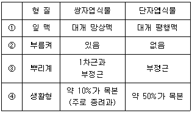
- ①
- ②
- ③
- ④
(정답률: 93%)
13. 다음 중 환형동물의 질강과 빈모강의 공통점으로 가장 적합한 것은?
- 강모와 환대가 있다.
- 자웅동체이며 생식공이 전체에 열려있다.
- 큰 체강은 격막으로 명확히 구분되어 있다.
- 체절의 수가 종에 따라 다르다.
(정답률: 70%)
14. 다음 과 중 목련아강에 속하지 않는 것은?
- 녹나무과
- 마디풀과
- 매자나무과
- 수련과
(정답률: 89%)
15. 다음은 Mayr가 정의한 것이다. ( )안에 가장 적합한 것은?
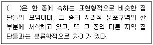
- 변종
- 품종
- 깃대종
- 아종
(정답률: 89%)
16. 동물의 경우 과의 명칭은 모식속 명칭의 어간에 접미사를 이용한다. 명명법상 과군의 접미사로 옳은 것은?
- -idae
- -ini
- -inae
- -oidea
(정답률: 85%)
17. 형태적으로는 거의 차이를 찾아내기가 어려울 만큼 아주 근사하지만 생식적으로 격리된 종을 의미하는 것은?
- 동소종(sympatric species)
- 이소종(allopatric species)
- 생태종(eco species)
- 동포종(sibling species)
(정답률: 89%)
18. 물푸레나무과의 주요 특징으로 가장 거리가 먼 것은?
- 꽃잎은 주로 이생한다.
- 대개 잎이 대생한다.
- 암술은 보통 2심피가 합생한다.
- 수술은 보통 2개이다.
(정답률: 78%)
19. 다음 동물 중 전형적으로 입에서 항문에 이르는 완전한 소화관을 갖고 있는 것은?
- 산호
- 촌충
- 해면
- 끈벌레류
(정답률: 89%)
20. Whittaker는 1969년에 생물계를 모네라, 원생생물, 식물, 균류, 동물계로 구분하였다. 다음 중 각 계에 관한 설명으로 옳은 것은?
- 원생생물은 진핵세포로 되어 있으며 일차적으로 단세포 또는 단세포의 군체를 이룬다.
- 균류는 색소체는 가지나 광합성 색소는 가지지 않으며 종속영양생물이다.
- 일부를 제외한 대부분의 동물은 세포벽이 있는 진핵세포를 가지는 다세포 생물이다.
- 모네라는 핵막을 가지며 단세포의 단체 또는 군체로 존재한다.
(정답률: 61%)
2과목: 환경생태학
21. 다음의 표는 각각 5종과 100개체로 이루어진 2개의 군집이다. 종 풍부도와 종 다양성에 대한 설명으로 옳은 것은?
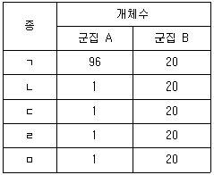
- 군집 A의 종 풍부도는 군집 B에 비하여 낮다.
- 군집 B의 종 풍부도는 군집 A에 비하여 낮다.
- 군집 A의 종 다양성이 군집 B에 비하여 낮다.
- 군집 B의 종 다양성이 군집 A에 비하여 낮다.
(정답률: 84%)
22. 다음은 오염물질에 관한 설명이다. ( )안에 알맞은 것은?
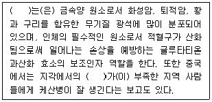
- 셀레늄(Se)
- 망간(Mn)
- 탈크(Talc)
- 이산화규소(SiO2)
(정답률: 79%)
23. 다음 중 기생식물이 아닌 것은?
- 라플레시아
- 환삼덩굴
- 실새삼
- 개종용
(정답률: 77%)
24. 유기체와 환경 간의 생지화학적 순환(biogeochemical cycle)의 기본 형태는 크게 기체형과 퇴적형(침전형)으로 나눌 수 있다. 다음 중 주로 퇴적형(침전형) 순환으로 이루어진 것은?
- 질소(N) 순환
- 인(P) 순환
- 황(S) 순환
- 탄소(C) 순환
(정답률: 91%)
25. 육상군집을 구성하는 육상식물의 생활형에 따른 다음 분류 중 보통 토양 중에 뿌리를 가지지 않는 것은?
- 착생식물(epiphyte)
- 지표식물(chamaephyte)
- 지중식물(cryptophyte)
- 반지중식물(hemi-cryptophyte)
(정답률: 89%)
26. 다음 중 저수지나 호수 등 수심이 깊고 유속이 늦으며 물의 체류시간이 긴 정체수역에서 나타나는 특징으로서 수온변화에 따른 물의 밀도차에 의해 물의 위치가 고정되는 현상을 의미하는 것은?
- Eutrophication
- illes-Reincke
- Stratification
- lack-watering
(정답률: 60%)
27. 수질오염공정시험기준상 BOD 측정방법으로 거리가 먼 것은?
- 시료는 시험하기 바로 전에 온도를 20±1℃로 조정한다.
- 수온이 20℃이하이거나 용존산소 함유량이 포화량 이상으로 과포화되어 있을 때는 수온을 23~25℃로 하여 15분간 통기하고 방냉하여 수온을 20℃로 한다.
- 시료 중의 용존산소가 소비되는 산소의 양보다 적을 때는 시료를 희석수로 적당히 희석하여 사용한다.
- pH가. 6.5~8.5 의 범위를 벗어나는 시료는 황산(10+1) 또는 10% 수산화나트륨 용액으로 시료를 중화하고, 넣어주는 산 또는 알칼리의 양은 시료량의 10%가 넘지 않아야 한다.
(정답률: 67%)
28. 생태계의 에너지 흐름에 관한 설명으로 옳지 않은 것은?
- 대기권에 도달된 태양에너지 중 약 1% 미만 정도가 광합성으로 고정된다.
- 생태계의 에너지 흐름은 태양에서 시작된다.
- 고차소비자 단계로 갈수록 이용할 수 있는 에너지량이 증가한다.
- 상위소비자보다 하위소비자 단계의 개체수가 많다.
(정답률: 93%)
29. 대기오염물질을 1차와 2차 오염물질로 구분할 때 다음 중 2차 오염물질에 해당하는 것은?
- NaCl
- N2O3
- Hg
- NOCl
(정답률: 59%)
30. 삼림군락에 대한 가장자리 효과를 완충하는 스크램블 기능을 하며, 숲 내부로 침투하는 측광 차단, 숲바닥의 수분 증발과 풍동(風動)을 완충하는 역할을 하며, 칡군락, 찔레꽃군락, 누리장나무군락, 예덕나무군락 등이 해당하는 군락은?
- 임관군락(canopy community)
- 망토군락(mantle community)
- 소매군락(hem community)
- 몸통군락(body community)
(정답률: 87%)
31. 다음 중 2차 천이에 대한 설명으로 가장 거리가 먼 것은?
- 지금까지 존재하던 식물 군락이 병충해, 홍수 등에 의해 제거된 장소에서 볼 수 있는 천이이다.
- 기존 식생의 종자 등이 땅 속에 잔존하는 경우가 많아 천이의 진행 속도가 1차 천이의 경우보다 빠르다.
- 식물의 선구자가 침입하여 진행되는 천이로 수분조건에 따라 건생천이와 수생천이로 나뉜다.
- 인간의 간섭에 의해 제거된 곳에서 2차 천이를 관찰할 수 있다.
(정답률: 77%)
32. 개체군의 절대밀도 조사방법으로 거리가 먼 것은?
- 전수조사(total counts)
- 표지-재포획법(marking-recapture method)
- 방위법(defense method)
- 방형구법(quadrat sampling)
(정답률: 79%)
33. 두 종의 개체군 사이에 일어나는 상호관계에 관한 설명으로 옳지 않은 것은?
- 중립(neutralism) - 각각 두 종 사이에 아무 관계가 없다.
- 원시협동(protocooperation) - 상호관계는 두 종류에게 유익하나, 구속성이 있다.
- 상리공생(mutualism) - 상호관계는 두 종에 유익하며 또한 의무적이다.
- 편리공생(commensalism) - 한 쪽은 이익을 받으나, 다른 한 쪽은 영향을 받지 않는다.
(정답률: 86%)
34. 다음 특정물질 중 오존 파괴지수가 가장 큰 것은?
- CF3Br
- C3F7Cl
- CHFBr2
- CH2BrCl
(정답률: 71%)
35. 암석의 표면에서 식물군집이 형성되어 가는 천이순서로 옳은 것은?
- 지의류 → 초원 → 양수림 → 음수림
- 초원 → 지의류 → 음수림 → 양수림
- 음수림 → 초원 → 지의류 → 양수림
- 지의류 → 음수림 → 양수림 → 초원
(정답률: 100%)
36. 다음 중 박쥐가 먹이인 나방으로부터 반사되는 음파를 이용하여 먹이의 위치를 판단하는 것과 가장 관계가 깊은 것은?
- 도플러효과
- 경쟁베타
- 플랑크법칙
- 레이놀즈법칙
(정답률: 93%)
37. 3km2의 야산에 90마리의 토끼가 살고 있는데 군데군데에 큰 바위가 있어 토끼가 실제로 이용할 수 있는 풀밭의 면적은 2km2이다. 이 야산에서 토끼가 차지하는 생태밀도(ecological density)와 조밀도(crude density)는 각각 얼마인가?
- 생태밀도 : 45마리/km2, 조밀도 : 30마리/km2
- 생태밀도 : 30마리/km2, 조밀도 : 45마리/km2
- 생태밀도 : 18마리/km2, 조밀도 : 45마리/km2
- 생태밀도 : 45마리/km2, 조밀도 : 18마리/km2
(정답률: 84%)
38. 수질오염의 영향에 관한 설명 중 옳지 않은 것은?
- 카드뮴 농축으로 인체의 골격이나 뼈에 영향을 미치면 골연화증이나 골다공증 등을 유발한다.
- ABS(알킬벤젠설폰산염)의 거품은 태양광선을 차단하여 수중식물의 광합성을 방해하며, 혐기성 미생물의 번식을 촉진시켜 물의 자정능력을 잃게 한다.
- 부영양성 호소의 퇴적물에서 자라는 혐기성 세균에 독소가 발생하여 어류가 죽기도 한다.
- 부영양성 호소의 용존산소와 영양염류가 풍부하여 빈영양성 호소보다 생물다양성이 높다.
(정답률: 85%)
39. 질산산화물, 탄화수소류 등이 강한 자외선을 받아 산화되는 과정에서 발생한 오염물질들이 공기 중의 수증기와 결합하여 안개처럼 나타나는 현상은?
- Acid rain
- Photochemical smog
- Green house effect
- Dust dome
(정답률: 95%)
40. 개체군 내에서 개체가 주어진 공간에 퍼져 있는 형태를 개체군 분산형태라고 한다. 개체간의 거리를 평균(mean: m)과 분산(variance: V)으로 분석하였을 때, V/m ＞ 1인 조건을 유의하게 만족하는 분포양상은?
- 괴상분포(clumped)
- 균일분포(uniform)
- 임의분포(random)
- 제시된 조건을 만족하는 분포양상은 없다.
(정답률: 85%)
3과목: 형태학
41. 화분관에는 수정 전에 몇 개의 핵이 존재하는가?
- 1개
- 2개
- 3개
- 4개
(정답률: 67%)
42. 열매의 분류 중 시과(samara)에 해당하는 것은?
- 내과피, 중과피, 외과피 등이 모두 연하며 육질화한 것
- 여러 개의 씨방이 개개의 심피로 나누어진 것
- 2개의 봉선을 따라 열린 것
- 씨방벽(과피)이 자라서 만들어진 날개가 있는 것
(정답률: 89%)
43. 벽공의 입구가 아치형을 이루고, 입구는 좁으나 내부는 넓은 유형의 복공은?
- 단벽공
- 분지벽공
- 유연벽공
- 피복벽공
(정답률: 83%)
44. 카스파리대(Casparian strip)에 관한 설명으로 옳지 않은 것은?
- 목질소와 목전소가 침적된 형태이다.
- 내초(pericycle)세포의 방사벽과 횡벽에 있다.
- 물과 무기물질을 통과시키지 않는다.
- 하등 유관속식물의 줄기에도 있으며, 유관속 조직으로부터 피층속으로 물의 역류를 방지할 수 있다.
(정답률: 58%)
45. 다음 중 상대정맥과 우심방의 만나는 곳에 위치하며 심장의 일차적인 박동원이 되는 것은?
- 동방결절
- 방실결절
- 심실사이중격
- 방실다발
(정답률: 74%)
46. 다음 중 전형적으로 갑각류에서 나타나는 유생은?
- 노플리우스
- 트로코포라
- 플라눌라
- 비핀나리아
(정답률: 63%)
47. 다음 ( )안에 알맞은 것은?
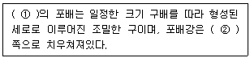
- ① 조류, ② 식물극
- ① 조류, ② 동물극
- ① 개구리, ② 식물극
- ① 개구리, ② 동물극
(정답률: 85%)
48. 다음은 통수요소에 축적된 2차벽 구조의 패턴이다. ( )안에 가장 알맞은 것은?
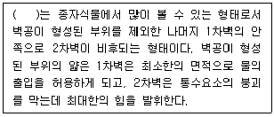
- 나선상비후
- 공문상비후
- 계문상비후
- 환상비후
(정답률: 85%)
49. 반월판(semilunar valve)이 존재하는 지점으로 가장 적합한 것은?
- 심방과 심실사이
- 동맥과 심실사이
- 동맥과 정맥사이
- 심방과 동맥사이
(정답률: 58%)
50. 다음 중 식물의 기본분열조직(ground meristem)이 분화되어 만들어지는 것은?
- guard cell
- root hair
- xylem
- parenchyma
(정답률: 67%)
51. 근관(root cap)의 기능으로 거리가 먼 것은?
- 뿌리의 끝(근단)에 있는 분열조직을 보호한다.
- 근관의 한 가운데에 있는 세포들은 중력을 인식한다.
- 점액물질을 분비하여 뿌리와 흙 사이의 마찰을 줄인다.
- 근단에 있는 분열조직의 상처 난 세포들을 대체시킨다.
(정답률: 67%)
52. ( )안에 알맞은 기관은?
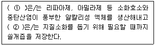
- ① 위(stomach), ② 이자(pancreas)
- ① 간(liver), ② 담낭(gallbladder)
- ① 담낭(gallbladder), ② 간(liver)
- ① 이자(pancreas), ② 담낭(gallbadder)
(정답률: 89%)
53. 쌍떡잎식물에서 떡잎 아래의 배축 부분을 무엇이라고 하는가?
- 묘조 정단분열조직(shoot apical meristtem)
- 상배축(epicotyl)
- 하배축(hypocotyl)
- 어린눈(plumule)
(정답률: 85%)
54. 딱총나무속, 등골나무속, 갈매나무속 식물의 엽병에서 볼 수 있는 후각조직으로서, 세포벽 물질의 축적이 절산단면벽에 균일하게 이루어져서 두꺼우며, 방사단면 벽은 절산단면 벽보다 얇게 비후되어 있는 것은?
- 각우후각조직
- 환상후각조직
- 간극후각조직
- 판상후각조직
(정답률: 100%)
55. 벼과식물의 배반(scutellum)은 다음 중 어디에 해당하는가?
- 배유
- 자엽
- 배축
- 배생근
(정답률: 40%)
56. 다음은 소나무과 식물의 잎 단면이다. 화살표가 지시하는 부분의 명칭은?
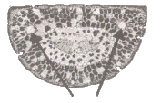
- 유관속 조직
- 내피
- 수지도
- 기공
(정답률: 86%)
57. 다음 중 2쌍의 촉각을 가지고 있는 동물은?
- 거미강
- 바다거미강
- 노래기강
- 갑각강
(정답률: 77%)
58. 다음 중 상피조직(epithelial tissue)으로 이루어져 있지 않은 것은?
- 입의 내피
- 혈액
- 비강의 내피
- 분비선을 덮고 있는 조직
(정답률: 100%)
59. 후각조직 세포의 일반적인 특징으로 옳지 않은 것은?
- 분열 기능을 회복할 수 있다.
- 1차 세포벽이 균일하지 않게 두꺼워진다.
- 소성(plasticity)을 가지고, 지지작용을 한다.
- 완전히 성숙했을 때는 죽은 세포이다.
(정답률: 89%)
60. 다음 중 평형곤(halter)이라고 불리우는 구조는 주로 어떤 곤충에서 찾아볼 수 있는가?
- 벌목
- 메뚜기목
- 딱정벌레목
- 파리목
(정답률: 85%)
4과목: 보존 및 자원생물학
61. 훼손된 자연생태계 교정방법 중 “복원(restoration)"에 관한 설명으로 가장 적합한 것은?
- 원래의 생태계로 회귀가 불가능한 경우 구조적으로 완전히 다르지만 자연 생태계의 기능을 원활히 수행하도록 하는 교정에 중점을 두는 행위
- 정확한 회귀는 아니지만 기능이나 구조에서 거의 유사한 상태로 회복시키는 것으로 자연 생태계의 기능이 잘 나타날 수 있도록 하는 것에 중점을 두는 행위
- 훼손된 환경에 대한 교정 노력이 적극적으로 수행되는 일련의 과정 중 원래 존재하던 상태로 정확히 회귀하는 것
- 생태계 스스로 원래의 모습으로 되돌아 갈 수 있도록 충분한 시간 동안 훼손된 지역을 그대로 두는 것
(정답률: 83%)
62. 도서생물지리설에 기반하여 생성된 보호지구 설계 원칙에서 종 보호에 유리한 설계에 속하는 것은?
- 고립되게 설계
- 불규칙 모양(비원형)으로 설계
- 한 개의 큰 면적으로 설계
- 생태통로 없이 설계
(정답률: 80%)
63. 희귀종의 중요성과 현황을 강조하기 위하여 국제자연보전연맹-세계보전연맹(IUCN)은 여러 개의 범주로 보존대상종을 구분하고 있다. 이 중 현재의 상황이 지속되면 종의 생존이 어려울 정도로 개체의 수가 감소된 종도 포함되며, 가까운 장래에 절멸될 가능성이 큰 종이 포함된 범주는?
- 희귀종(Rare)
- 절멸종(Extinct)
- 위험종(Endangered)
- 취약종(Vulnerable)
(정답률: 77%)
64. 생물다양성의 3가지 고려수준으로 가장 거리가 먼 것은?
- 종 다양성
- 군집 및 생태계 다양성
- 야생작물의 다양성
- 유전적 다양성
(정답률: 94%)
65. 멸종 방지를 위한 현지 외 보전에서 사육개체군의 연구를 통하여 얻어지는 장점으로 가장 거리가 먼 것은?
- 전시 또는 연구목적으로 야생의 동물을 포획할 필요가 없어진다.
- 일반인들에게 종 보전의 필요성을 교육시킬 수 있다.
- 새로운 품종의 개발로 경제성을 높이며, 출생, 사망률의 인위조절로 종을 효율적으로 규제할 수 있다.
- 자연의 다른 개체를 보호하는 효과를 나타낸다.
(정답률: 75%)
66. 경관수준의 생물다양성에 관한 설명으로 옳지 않은 것은?
- 특정 군집 종류의 풍부도와 관계가 있다.
- 군집 종류의 상대적 밀도에 근거한다.
- 지역의 크기, 모양, 연결성 등에 따른다.
- 생물다양성이 낮은 지역은 다수의 군집으로 균일하게 덮여 있는 곳을 말한다.
(정답률: 95%)
67. 공공 수족관에 종사하는 전문가의 역할과 거리가 먼 것은?
- 희귀종을 수조관에서 유지시키기 위한 증식 기술을 개발
- 더 이상의 야생개체들이 포획되지 않도록 증식된 개체를 방사
- 위험 상태인 고래 종류 등의 보존을 위한 역할 수행
- 근친교배를 통한 종의 순수한 혈통을 강화
(정답률: 92%)
68. 육생 생물군집에서 종 풍부도(species richness)가 증가하는 일반적인 경우가 아닌 것은?
- 고도가 낮을수록
- 태양광선을 많이 받을수록
- 지질학적으로 단순한 지형일수록
- 강우량이 많을수록
(정답률: 89%)
69. 국제자연보전연맹-세계보전연맹의 생물종생존위원회 내의 보전육종전문가그룹에서 종의 적합한 보호와 관리를 위해 동물원에 제공하는 정보와 가장 거리가 먼 것은?
- 영양 요구도
- 마취 기술
- 적합한 주거조건
- 최소생존개체군의 크기
(정답률: 58%)
70. 다음 중 생물다양성 위협요인으로 다양성 감소에 가장 큰 영향을 미치는 것은?
- 개발에 의한 서식처 파괴
- 환경오염
- 인구감소
- 외래종의 도입
(정답률: 91%)
71. 이주와 관련된 일시적이고 유동적인 개체군의 체계를 무엇이라고 하는가?
- metapopulation
- MVP
- S-population
- effective population
(정답률: 87%)
72. 많은 보전생태학자들은 종수준보다는 군집과 생태계 수준의 접근이 보전노력의 목표가 되어야 한다고 주장하는데 그 이유로 가장 거리가 먼 것은?
- 군집의 보전으로 많은 수의 종을 자립적인 단위로 보전할 수 있다.
- 보전 대상으로 우선순위가 높은 종을 식별하는 일은 군집수준에서 접근해야 한다.
- 대상종의 구제는 군집 보전에 비해 힘들고 비용이 많이 들며 비효율적이다.
- 서식지 보호를 위한 투자가 하나의 뚜렷한 종을 구하기 위한 투자보다 더 많은 종을 보존할 수도 있다.
(정답률: 27%)
73. 다음 중 생물자원의 간접 경제가치에 해당하지 않는 것은?
- 기후조절
- 폐기물처리
- 여가 생활과 관광
- 천연염료
(정답률: 89%)
74. 다음 중 보전(Conservation)과 보존(Preservation)의 차이점을 가장 적합하게 설명한 것은?
- 보전은 협의의 보존을 의미한다.
- 보전은 주로 자연의 흐름에 역행하는 인위적인 관리를 대원칙으로 한다.
- 보전은 자원을 유지하기 위해 관리가 필요한 경우에, 보존은 자원을 유지하기 위해 관리가 필요하지 않은 경우에 사용된다.
- 보전은 큰 복합체나 일반적 체계를 대상으로 하며, 보존은 특정개체, 집단, 종 등의 구체적인 대상을 가진다.
(정답률: 79%)
75. 작은 개체군에 있어 크기가 급격히 감소하거나 지역적으로 소멸되는 것은 일반적으로 3가지 포괄적인 이유로 설명될 수 있는데, 그 이유와 가장 거리가 먼 것은?
- 근친교배
- 서식지 면적의 증가
- 유전변이 소실
- 질병 등의 환경적 변동
(정답률: 87%)
76. 다음 중 보전생물학이 추구하는 목적으로 가장 거리가 먼 것은?
- 종 및 군집, 그리고 생태계에 대한 인간의 활동을 명확히 이해하는 것
- 종의 절멸을 방지하기 위한 실질적인 보전방법을 발전시키는 것
- 가능한 범위 내에서 절멸위험에 처한 종들이 다시 생태계 내에서 기능을 발휘하도록 하는 것
- 생물의 다양성을 체계적으로 연구하고 진화적 관점에서 그들 간의 근연관계를 명확히 파악하는 것
(정답률: 58%)
77. 환경오염으로 인한 서식지의 황폐화 또는 오염현상에 관한 설명으로 옳지 않은 것은?
- 산업화된 지역의 호수에서는 산성비의 영향으로 동물군집의 상당부분이 손실된다.
- 대기 중의 이산화탄소 농도 증가는 새로운 여건에 적응할 수 있는 종이 살아남게 하여 결국 생물군집의 구조가 급격히 변화될 가능성이 있다.
- 자연계에 살포된 살충제가 먹이사슬을 거쳐 생물에 농축되고 궁극적으로 인간에게 영향을 미친다.
- 비료, 세제 등의 과도한 사용은 부영양화를 일으켜 물 속의 산소농도가 높아지고 복잡한 구조의 생물군집이 형성된다.
(정답률: 100%)
78. 생물다양성의 장기적 보전을 위하여 개체들을 인위적으로 조절된 여건 하에서 보호, 관리하는 현지 외(ex-situ) 보전방법에 해당되지 않는 것은?
- 수렵장
- 야생방사
- 종자은행
- 수족관
(정답률: 58%)
79. 식물 표본의 충해를 방지하기 위해 사용하는 약품으로 가장 거리가 먼 것은?
- carbon disulfide gas
- cyanide gas
- chromium gas
- paradichlorobenzene
(정답률: 67%)
80. 세계 각 지역으로 외래종이 도입된 주요 배경으로 가장 거리가 먼 것은?
- 식민지 개척을 위한 가축의 이동
- 원예와 농업의 발달
- 운송의 발달
- 질병의 확산
(정답률: 77%)
5과목: 자연환경관계법규
81. 환경정책기본법령상 환경부장관이 환경정보망의 효율적인 구축ㆍ운영을 위하여 필요한 경우 환경현황조사를 의뢰하거나 환경정보망의 구축ㆍ운영을 위탁할 수 있는 전문기관과 가장 거리가 먼 것은?
- 국립환경과학원
- 보건환경연구원
- 한국농어촌공사
- 한국수자원공사
(정답률: 67%)
82. 농지법상 농업법인이 청산중인 경우로 소유농지를 위탁경영할 수 없는 경우이지만 이를 위반하여 소유농지를 위탁경영한 자에 대한 벌칙기준으로 옳은 것은?
- 1천만원 이하의 벌금
- 3년 이하의 징역 또는 1천5백만원 이하의 벌금
- 5년 이하의 징역 또는 2천만원 이하의 벌금
- 7년 이하의 징역 또는 3천만원 이하의 벌금
(정답률: 82%)
83. 습지보전법령상 명예습지생태안내인의 위촉기간기준은?
- 1년으로 한다.
- 2년으로 한다.
- 3년으로 한다.
- 5년으로 한다.
(정답률: 60%)
84. 국토기본법상 국토계획에 포함되지 않는 것은?
- 광역종합계획
- 부문별계획
- 시ㆍ군종합계획
- 지역계획
(정답률: 50%)
85. 산지관리법상 산지전용ㆍ일시사용제한지역으로 지정할 수 있는 산지로 가장 거리가 먼 것은?
- 대통령령으로 정하는 주요 산줄기의 능선부로서 자연경관 및 산림생태계의 보전을 위하여 필요하다고 인정되는 산지
- 명승지, 유적지, 그 밖에 역사적ㆍ문화적으로 보전할 가치가 있다고 인정되는 산지로서 대통령령으로 정하는 산지
- 산사태 등 재해발생이 특히 우려되는 산지로서 대통령령으로 정하는 산지
- 송이버섯과 같은 중요한 임산물 생산을 위해 보전이 필요한 산지로서 산림청장이 정하는 산지
(정답률: 64%)
86. 자연환경보전법령상 사전환경성 검토협의대상 개발사업의 세부범위의 일반기준 중 개발사업 요건에 해당하지 않는 것은? (단, 관계법령에 따른 개발사업의 종류와 개발사업 시행면적 등은 모두 요건에 충족된다.)
- 높이 15m 이상의 건축물이 입지하는 경우
- 길이 10m 이상의 교량을 설치하는 경우
- 길이 2km 이상의 도로나 철도를 개설 또는 확장하는 경우
- 높이 20m 이상의 전신주ㆍ송신탑 또는 굴뚝 등 수직 구조물을 설치하는 경우
(정답률: 55%)
87. 자연공원법령상 국립공원위원회의 위원장은 누구인가?
- 환경부장관
- 환경부차관
- 환경부 자연보전국장
- 국립공원관리공단이사장
(정답률: 75%)
88. 국토의 계획 및 이용에 관한 법률 시행령상 국토해양부장관 또는 시ㆍ도지사가 용도지구를 규정에 의하여 도시관리계획결정으로 세분하여 지정할 수 있는 지구와 거리가 먼 것은?
- 복합개발진흥지구
- 문화자원보존지구
- 자연취락지구
- 시가지미관지구
(정답률: 53%)
89. 자연환경보전법규상 위임업무 보고사항 중 생태ㆍ경관보전지역 안에서의 행위중지ㆍ원상회복 또는 대체자연의 조성 등의 명령 실적의 보고횟수 기준으로 옳은 것은?
- 수시
- 연 1회
- 연 2회
- 연 4회
(정답률: 57%)
90. 다음 농지법상 용어의 뜻이다. ( )안에 가장 적합한 것은?
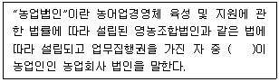
- 3분의 1 이상
- 2분의 1 이상
- 3분의 2 이상
- 4분의 3 이상
(정답률: 43%)
91. 습지보전법상 “연안습지”의 용어의 정의로 옳은 것은?
- 습지수면으로부터 수심 10m까지의 지역을 말한다.
- 광합성이 가능한 수심(조류의 번식에 한한다.)까지의 지역을 말한다.
- 만조시에 수위선과 지면이 접하는 경계선으로부터 간조시에 수위선과 지면이 접하는 경계선까지의 지역을 말한다.
- 지하수위가 높고 다습한 곳으로서 간조시에 수위선과 지면이 접하는 경계면 내에서 광합성이 가능한 수심지역까지를 말한다.
(정답률: 90%)
92. 산지관리법상 공익용 산지에 해당되지 않는 것은?
- 사찰림의 산지
- 산림자원의 조성 및 관리에 관한 법률에 의한 시험림의 산지
- 자연공원법에 의한 공원구역의 산지
- 문화재보호법에 따른 문화재보호구역의 산지
(정답률: 82%)
93. 다음은 백두대간 보호에 관한 법률상 백두대간 보호지역의 지정과 관련 지역에 관한 설명이다. ( )안에 적합한 것은?
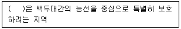
- 특별구역
- 완충구역
- 핵심구역
- 생태구역
(정답률: 65%)
94. 국토의 계획 및 이용에 관한 법률상 개발행위로 인하여 주변의 환경ㆍ경관ㆍ미관ㆍ문화재 등이 크게 오염되거나 손상될 우려가 있는 지역으로 도시관리계획상 특히 필요하다고 인정되는 지역에 대해서는 중앙도시계획위원회나 지방도시계획위원회의 심의를 거쳐 일정기간동안 개발행위허가를 제한할 수 있는 그 기간기준으로 옳은 것은?
- 1회에 한하여 2년 이내의 기간
- 1회에 한하여 3년 이내의 기간
- 2회에 한하여 2년 이내의 기간
- 2회에 한하여 3년 이내의 기간
(정답률: 48%)
95. 환경정책기본법령상 사전환경성검토의 환경영향검토 항목으로 가장 거리가 먼 것은? (단, 행정계획이고, 구체적인 입지계획이 포함되어 있는 경우에 한한다.)
- 계획의 환경목표와의 부합성
- 계획의 건전성 및 지속가능성
- 생활환경에 미치는 영향
- 개발사업수익에 미치는 영향
(정답률: 78%)
96. 국토의 계획 및 이용에 관한 법률 시행령상 기반시설설치비용 산정기준 시 대통령령으로 정하는 건축물별 기반시설유발계수의 연결로 옳지 않은 것은?
- 단독주택 : 0.7
- 공동주택 : 0.7
- 숙박시설 : 0.7
- 수련시설 : 0.7
(정답률: 48%)
97. 독도 등 도서지역의 생태계 보전에 관한 특별법상 특정도서로 지정될 수 있는 도서와 가장 거리가 먼 것은? (단, 그 밖에 자연생태계 등의 보전을 위하여 환경부장관이 필요하다고 인정한 도서는 제외)
- 역사적으로 유래가 깊고 유적과 유물이 많은 도서
- 용암동굴 등 자연경관이 뛰어난 도서
- 희귀동ㆍ식물, 멸종위동ㆍ식물, 그 밖의 우리나라 고유의 생물종의 보존을 위하여 필요한 도서
- 지형 또는 지질이 특이하여 학술적 연구 또는 보전이 필요한 도서
(정답률: 58%)
98. 야생동ㆍ식물보호법규상 생물자원보전시설을 설치ㆍ운영하고자 하는 자가 그 시설을 등록하고자 할 때 갖추어야 할 각 요건(기준)으로 옳은 것은?
- 인력요건 : 생물자원과 관련된 분야의 석사 이상 학위소지자로서 동 분야에서 1년 이상 종사한 자
- 인력요건 : 생물자원과 관련된 분야의 학사 이상 학위소지자로서 동 분야에서 2년 이상 종사한 자
- 표본보전시설 : 60제곱미터 이상의 수장시설
- 열풍건조시설 : 12마력이상의 건조스팀발생시설
(정답률: 60%)
99. 다음은 자연환경보전법령상 별도관리지역에 관한 설명이다. 밑줄 친 지역에 해당하지 않는 지역은?
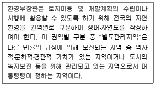
- 산림보호법에 따른 산림보호구역
- 자연공원법에 따른 자연공원
- 초원관리법에 따른 고산초원
- 습지보전법에 따른 습지보호지역(연안습지보호지역은 제외)
(정답률: 77%)
100. 환경정책기본법령상 수질 및 수생태계 기준 중 하천의 사람의 건강보호기준으로 옳지 않은 것은? (단, 단위는 mg/L 이다.)
- 납(Pb) : 0.02 이하
- 테트라클로로에틸렌(PCE) : 0.04 이하
- 사염화탄소 : 0.004 이하
- 음이온계면활성제(ABS) : 0.5 이하
(정답률: 50%)